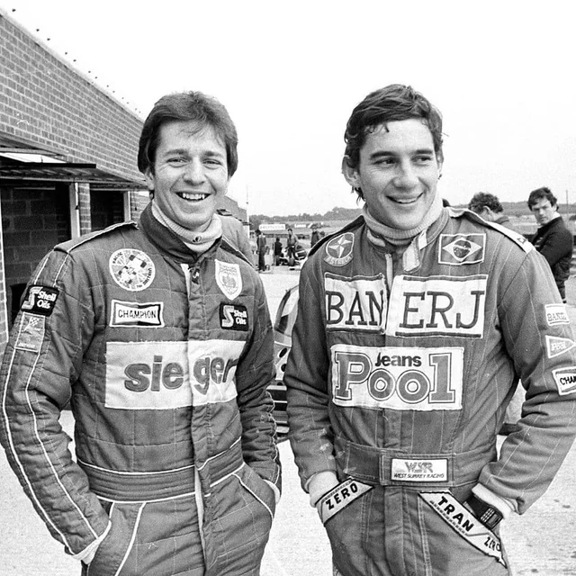
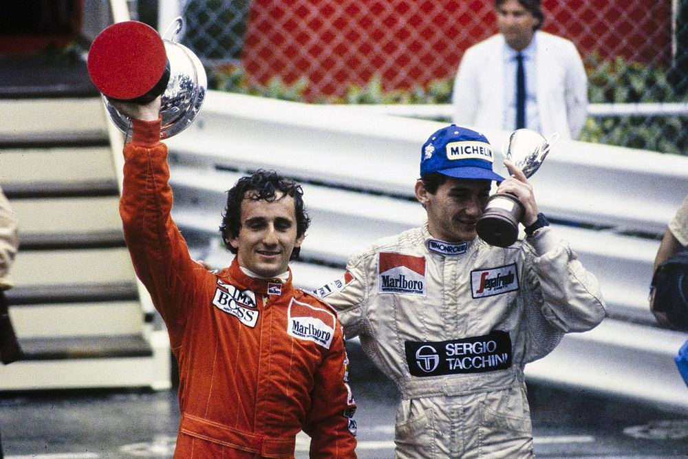
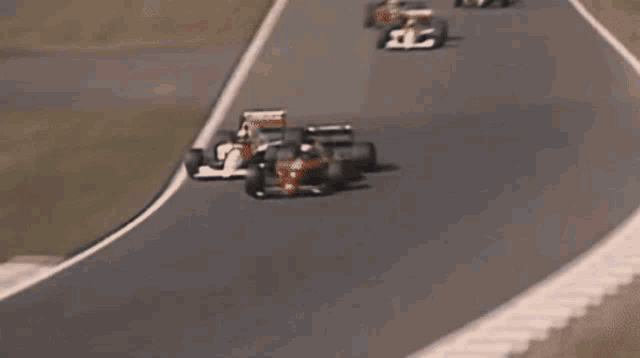

Va començar la seva carrera esportiva en el karting. Va guanyar el campionat paulista el 1974 (categoria júnior) i 1976; el campionat brasiler el 1978, 1979 i 1980, el campionat sud-americà de 1977 i 1980 i va ser subcampió del món els anys 1979 i 1980. Durant la celebració del mundial de 1979, Senna va començar a dur el casc pintat amb els colors que l'acompanyarien en la seva carrera esportiva, creació de Sid Mosca.
A continuació fa el salt a Europa. Venç el campionat de Fórmula Ford 1600 de 1981 (12 victòries en 20 curses) i el campionat de Fórmula Ford 2000 de 1982 (22 de 27). En aquella època, encara era conegut pel cognom patern, Da Silva, però considerant que aquest era massa comú, va decidir començar a utilitzar el matern, Senna. L'any 1983 va guanyar el Campionat Britànic de Formula 3, imposant-se en 13 de les 21 curses, (9 d'elles de manera consecutiva).

Durant 1983 i inicis de la temporada 1984 de Fórmula 1 va fer tests amb diferents escuderies com Williams,McLaren,Brabham i Toleman,qui el va fitxar. El 1985 va fitxar per Lotus i va aconseguir dues victòries,la primera al Gran Premi de Portugal
Ayrton Senna no va tenir una gran debut a la F1,ja que a la seva primera cursa,que justament era al seu Brasil natal,va retirar-se a la volta 8 per problemes amb el turbo. Malgrat tot,no va ser fins el GP de Mónaco que va fer que el món descobrís el seu talent.
Senna va quedar 14é a la classificació per la cursa,però va ser precisament durant la cursa que,gràcies a les condicions de pluja extrema durant tota la cursa i al domini de conducció de Senna en pluja,que va anar remuntant a costa dels accidents i retirades dels seus rivals,malgrat tot,va plantar cara a Alain Prost en les últimes voltes,fins que a la vota 31 de 77,a causa de problemes de visió i conducció per la forta pluja,va fer que caigués la bandera vermella,tot i que si hagués seguit la cursa Senna hauria guanyat. Aquesta cursa va suposar un gran salt per la carrera de Senna i pressumptament va iniciar la seva rivalitat amb Alain Prost.
El 1985 va fitxar per Lotus i va aconseguir dues victòries,la primera al Gran Premi de Portugal sota la pluja.
Tant el 1985 com 1986 va quedar 4t al mundial,tot i que en aquesta última temporada va estar entre els quatre contendents al títol,que va acabar guanyar Prost. El 1987 va quedar 3r.
Finalment el 1988 va fitxar per McLaren,tenint per primera vegada un cotxe dominant amb possibilitats de guanyar mundials. De fet,gràcies al sistema de puntuació d'aquella temporada (només comptaven els 11 millors resultats en les 16 curses,Prost va guanyar més curses però Senna va tenir millors resultats.Si comptessin tots els resultats,hagués guanyat Prost per 9 punts),va aconseguir guanyar el seu primer mundial de pilots a casa del motorista de Mclaren,Honda.
El 1989 va ser una temporada histórica en la que va quedar palés la guerra entre companys d'equip,ja que els dos se la tenien jugada l'un a l'altre des de que va unir-se a McLaren.
La guerra va acabar explotant quan al Gran Premi del Japó,estant el Mundial encara per decidir Prost i Senna van xocar entre si. Prost va abandonar al moment i Senna va ser ajudat pels comissaris de pista,santant-se la última corba,acabant desclassificat a posteriori. Prost,qui va acabar guanyant el mundial,a principis de temporada va anunciar que marxava a Ferrari pel 1990.
El 1990 va ser un mundial encara més disputat que la temporada anterior,ja que també es va decidir al GP del Japó quan Senna liderava el campionat per 11 punts i hi va haver una polémica per la posició de la pole,com a protesta,Senna va xocar intencionadament contra Prost,guanyant el mundial de 1990.
El 1991 Alain Prost va anunciar que el 1992 es prendria un any sabàtic després de ser acomiadat per Ferrari al haver criticat durament el cotxe. Senna va dominar la temporada 1991
1992 va ser una temporada complicada per Senna i McLaren,ja que van quedar 4t en pilots i segons en constructors,sense poder fer res contra els Williams de Nigel Mansell i Riccardo Patrese.
El 1993 es podria dir que va ser el final de la guerra amb Alain Prost,ja que en un campionat lleugerament més competit que 1992,va acabar amb el quart mundial de Prost,amb Senna pujant a Prost al primer lloc del podi de l' última cursa que els dos van disputar,ja que el francès es va retirar.
La retirada de Prost (que tenia en el seu contracte una clàusula que impedia que el seu company fos Senna) va provocar que Senna anés a Williams per la temporada 1994,però va tenir un terrible inici de temporada,al no puntuar en les primeres dues curses (en la primera per error propi i la segona per accident).
Desgraciadament al tercer Gran Premi de 1994 a Imola,el jove pilot Roland Ratzenberger va morir en un accident,fet que va deixar en shock a Senna,i el cap dels metges de la F1 li va demanar que no corrés el dia de la cursa,cosa que Senna va negar-se pel seu esperit competitiu,fet que va provocar-li la mort a la volta 6,al sortir-se de pista i impactar contra el mur de la corba Tamburello.